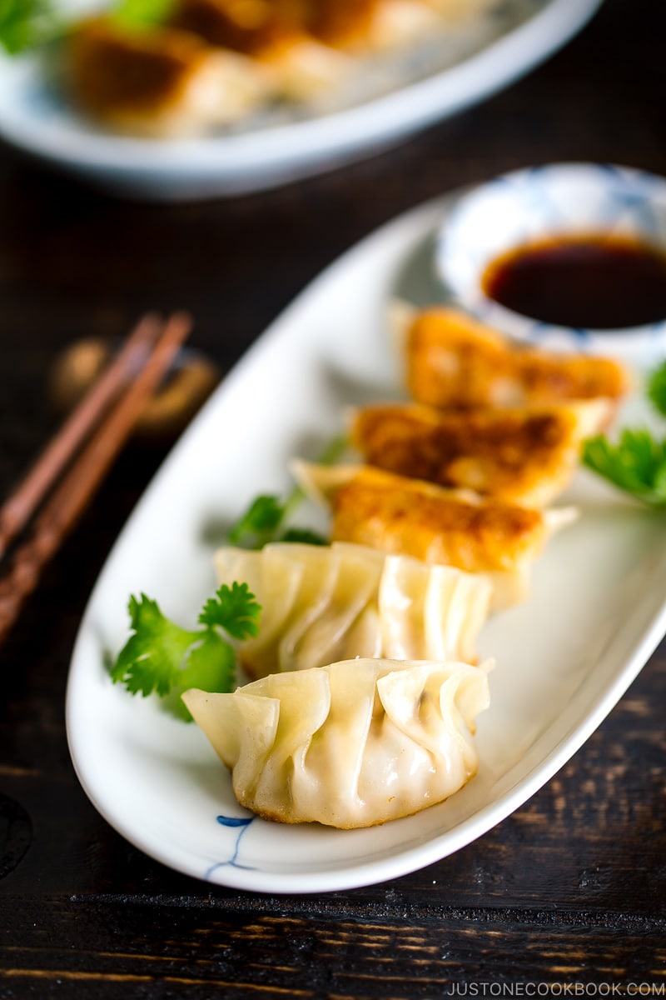

Gyoza Recipe

Description
Gyoza or Japanese pan-fried dumplings, are as
ubiquitous as ramen in Japan. You can find these
mouthwatering dumplings being served at specialty shops,
izakaya, ramen shops, grocery stores or even at festivals.
The original Chinese dumplings are called Jiaozi.
These dumplings consist of ground meat and vegetable
filling that are wrapped into a thinly rolled piece of dough,
which is then sealed by pressing the edges together.
Finished jiaozi can be boiled, steamed, pan-fried, or deep-fried.
Ingredients
- 1 package gyoza wrappers
- 1 Tbsp olive oil
- 1/4 cup water
- 1 tsp roasted sesame oil
For the gyoza filling
- 3/4 lb ground pork
- 5 oz cabbage
- 2 green onions
- 2 shiitake mushrooms
- 1 clove garlic
- 1 knob ginger
For the filling seasoning
- 1 tsp sake
- to remove the unwanted smell of the meat
- 1 tsp roasted sesame oil
- 1 tsp soy sauce
- 1/4 tsp salt
- 1/8 tsp freshly ground black pepper
For the dipping sauce
- 1 Tbsp rice vinegar
- 1 Tbsp soy sauce
- 1/8 tsp la-yu (Japanese chili oil)
Cooking Instructions
To make the gyoza filling
- Discard the thick core of the cabbage leaves;
mince the leaves into very small pieces.
- Mince the green onions and shiitake mushrooms
into small pieces.
- Combine the ground meat, cabbage, green onions,
and shiitake mushrooms in a large bowl.
- Add the minced garlic and grated ginger to the bowl.
- Add the seasonings to the bowl.
- Mix well and knead the mixture with your hand until
it becomes pale in color and sticky.
- Fill wrapper with mixture and fold gyoza into shape
To cook the gyoza
- Heat the oil in a large non-stick frying pan over medium heat.
When the pan is hot, place the gyoza in a single layer,
flat side down in a circular pattern
- Cook until the bottom of the gyoza turns golden brown,
about 3 minutes.
- Add 1/4 cup of water to the pan. Immediately cover with a
lid and steam the gyoza for about 3 minutes or until most
of the water evaporates.
- Remove the lid to evaporate any remaining water.
Drizzle 1 tsp sesame oil around the gyoza in the frying pan.
- Cook uncovered until the gyoza is golden
brown and crisp on the bottom.
- Transfer to a plate and serve with the dipping sauce.
For the dipping sauce, combine the sauce ingredients
in a small plate and mix together.
Home